12 оригинальных runtime кадров на настоящем изолированном backend. Это render samples, не отдельные тесты или действия. Figma/reference здесь отсутствуют.
Вход
PWA-AUTH__auth-password-light-300-root16__1e7dca2f1Адресный кадр исправления mobile theme P2, не новая web-функция.
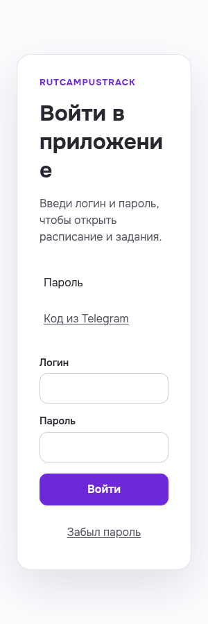
light · 300px · auth-password-light-300-root16
revision: 1e7dca2f10e1c86a309bdb478a59f5057b9d1872
Оригинальный PNGВход
PWA-AUTH__auth-password-dark-300-root16__1e7dca2f1Адресный кадр исправления mobile theme P2, не новая web-функция.
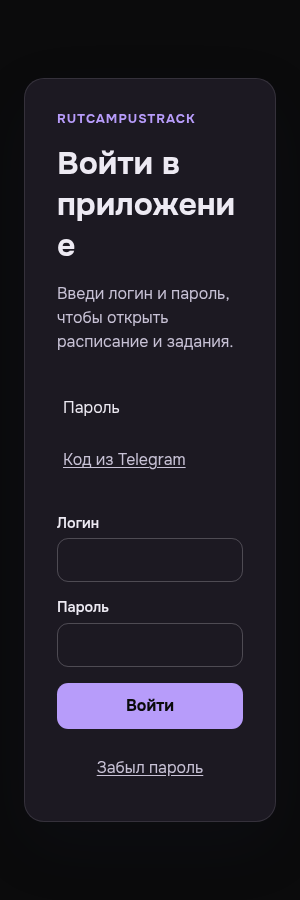
dark · 300px · auth-password-dark-300-root16
revision: 1e7dca2f10e1c86a309bdb478a59f5057b9d1872
Оригинальный PNGВход
PWA-AUTH__auth-password-light-300-root20__1e7dca2f1Адресный кадр исправления mobile theme P2, не новая web-функция.
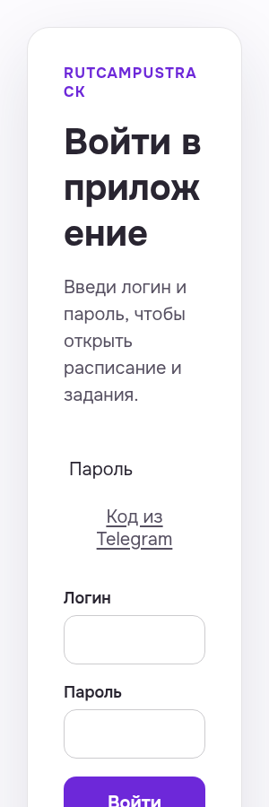
light · 300px · auth-password-light-300-root20
revision: 1e7dca2f10e1c86a309bdb478a59f5057b9d1872
Оригинальный PNGВход
PWA-AUTH__auth-password-dark-300-root20__1e7dca2f1Адресный кадр исправления mobile theme P2, не новая web-функция.
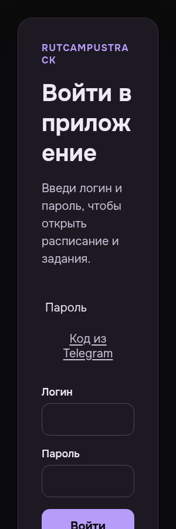
dark · 300px · auth-password-dark-300-root20
revision: 1e7dca2f10e1c86a309bdb478a59f5057b9d1872
Оригинальный PNGВход
PWA-AUTH__auth-otp-light-300-root16__1e7dca2f1Адресный кадр исправления mobile theme P2, не новая web-функция.
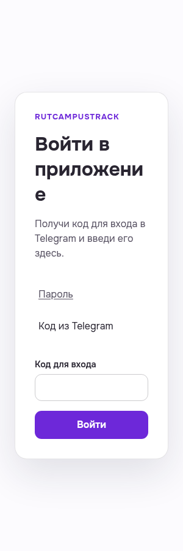
light · 300px · auth-otp-light-300-root16
revision: 1e7dca2f10e1c86a309bdb478a59f5057b9d1872
Оригинальный PNGВход
PWA-AUTH__auth-otp-dark-300-root16__1e7dca2f1Адресный кадр исправления mobile theme P2, не новая web-функция.
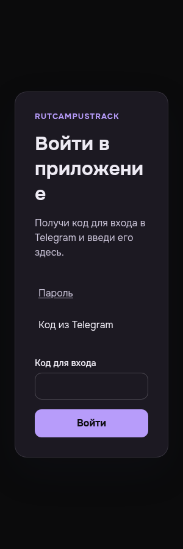
dark · 300px · auth-otp-dark-300-root16
revision: 1e7dca2f10e1c86a309bdb478a59f5057b9d1872
Оригинальный PNGВход
PWA-AUTH__auth-otp-light-300-root20__1e7dca2f1Адресный кадр исправления mobile theme P2, не новая web-функция.
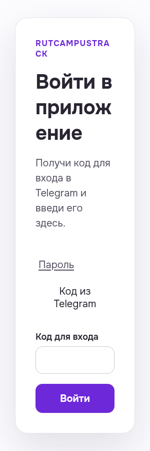
light · 300px · auth-otp-light-300-root20
revision: 1e7dca2f10e1c86a309bdb478a59f5057b9d1872
Оригинальный PNGВход
PWA-AUTH__auth-otp-dark-300-root20__1e7dca2f1Адресный кадр исправления mobile theme P2, не новая web-функция.
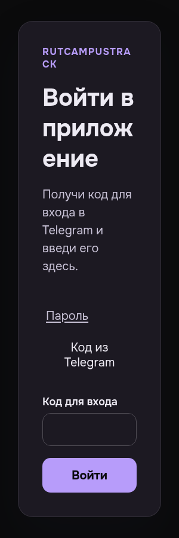
dark · 300px · auth-otp-dark-300-root20
revision: 1e7dca2f10e1c86a309bdb478a59f5057b9d1872
Оригинальный PNGВыбор семестра
MOBILE-HEADMAN-SEMESTER__headman-semester-light-300-root16__1e7dca2f1Адресный кадр исправления mobile theme P2, не новая web-функция.
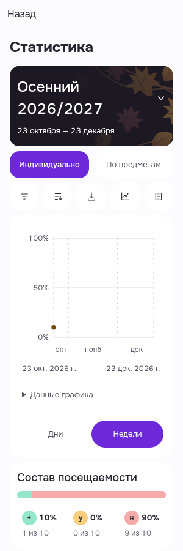
light · 300px · headman-semester-light-300-root16
revision: 1e7dca2f10e1c86a309bdb478a59f5057b9d1872
Оригинальный PNGВыбор семестра
MOBILE-HEADMAN-SEMESTER__headman-semester-dark-300-root16__1e7dca2f1Адресный кадр исправления mobile theme P2, не новая web-функция.
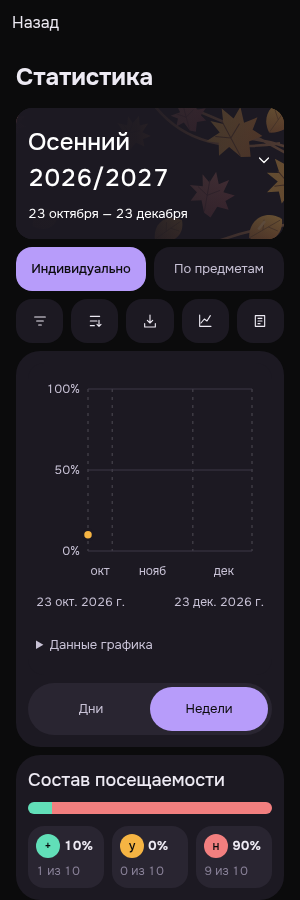
dark · 300px · headman-semester-dark-300-root16
revision: 1e7dca2f10e1c86a309bdb478a59f5057b9d1872
Оригинальный PNGВыбор семестра
MOBILE-HEADMAN-SEMESTER__headman-semester-light-1440-root16__1e7dca2f1Адресный кадр исправления mobile theme P2, не новая web-функция.
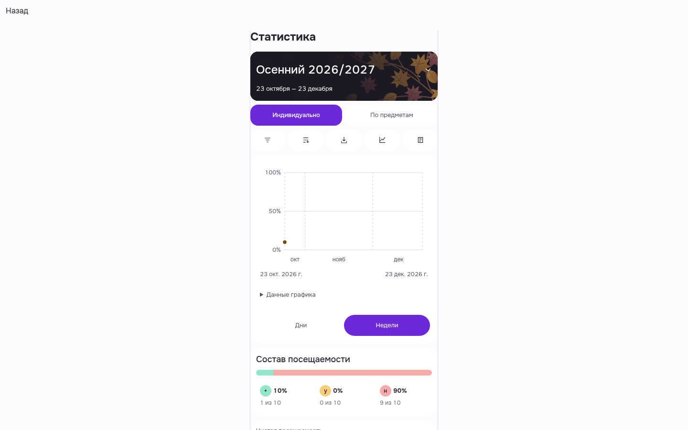
light · 1440px · headman-semester-light-1440-root16
revision: 1e7dca2f10e1c86a309bdb478a59f5057b9d1872
Оригинальный PNGВыбор семестра
MOBILE-HEADMAN-SEMESTER__headman-semester-dark-1440-root16__1e7dca2f1Адресный кадр исправления mobile theme P2, не новая web-функция.
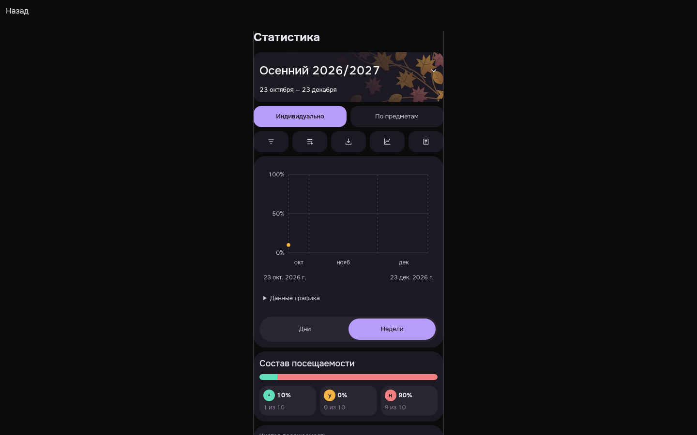
dark · 1440px · headman-semester-dark-1440-root16
revision: 1e7dca2f10e1c86a309bdb478a59f5057b9d1872
Оригинальный PNG